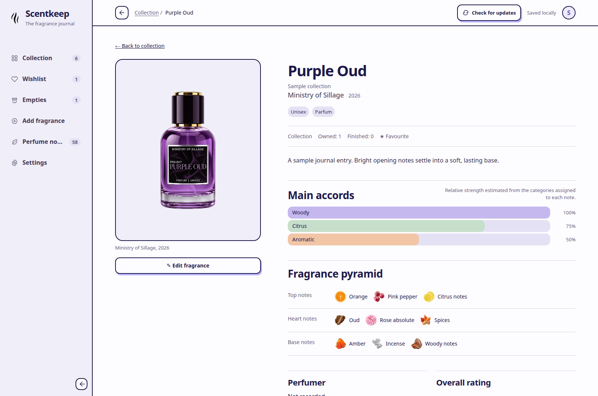

Record what makes a scent yours.
Keep the fragrance facts, its note pyramid and your own ratings together.
Every field is editable later, so begin with what you know.

The editor has three steps: General information, Fragrance pyramid and Additional details. Use Continue to move forward and Back to revisit an earlier step. Saved brands are suggested while you type.
Record the facts
- Name and brand
These identify the record and are used when checking imported CSV duplicates.
- Context
Enter a release year from 1800 to 2100. Collection, concentration, perfumer and description are optional.
- Ownership
Choose a shelf, record bottles owned or finished, and mark favourites.
Build the note pyramid
Add each note separately to Top, Heart or Base notes. Saved note names appear as suggestions, while new names are added to your note catalogue.
Choose a saved suggestion or enter a new note name. With a saved Parfumo session, you can also choose a note search result to bring in its metadata. Selecting a note chip asks before removing it from that fragrance.
Rate the experience
Score scent, longevity, sillage, bottle and value for money from 0 to 10. Scentkeep calculates an overall rating from the values you provide.
Paste an image URL to show bottle artwork on the collection card and detail page, or leave it blank to use the placeholder.
Ratings accept tenths of a point. The overall score is the mean of the rating fields you fill in, rounded to one decimal place.
Track bottles, prices and favourites
In Additional details, enter Bottles owned and Bottles finished, and mark a fragrance as Favourite. Price bought is optional for any shelf; Current price is available when Status is Wishlist. These values appear in the fragrance’s ownership summary.
Read the accord profile
Main accords estimate the fragrance profile from its notes’ categories. If the profile is empty, add categories in Perfume notes, then reopen the fragrance. The bars show relative strength, with the strongest accord at 100%.
Understand how accords are generated ↗